Panduan Pengguna
Satu sistem untuk pesanan, produksi, stok, dan keuangan
W3S Catering
| 1. Apa itu 3S ONE |
| 2. Siapa memakai apa |
| 3. Peta besar: dari pesanan sampai laporan |
| 4. Sebelum dan sesudah Modul Inventory: apa yang berubah |
| 5. Cara masuk dan berkeliling |
| 6. Aplikasi Admin, Sales, Production, Delivery |
| 7. Aplikasi Accounting |
| 8. Aplikasi Inventory |
| 9. Form Kebutuhan: dari dapur sampai barang datang (alur lengkap) |
| 10. Barang datang: diterima, ditolak, harganya |
| 11. Dari mana angka HPP dan stok berasal |
| 12. Aplikasi Owner |
| 13. Kamus istilah |
| 14. Pertanyaan yang sering muncul |
3S ONE adalah satu sistem tempat seluruh tim W3S Catering bekerja pada data yang sama: pesanan masuk, jadwal masak, belanja bahan, stok gudang, pengiriman, penjualan, sampai laporan keuangan.
Dulu bagian-bagian ini tercatat terpisah (buku, Excel, dan aplikasi yang berbeda). Sekarang:
Setiap orang diberi peran oleh Owner di menu Master User. Peran menentukan aplikasi mana yang tampil di bilah atas.
| Peran | Aplikasi yang tampil | Tugas utama |
|---|---|---|
| Owner | Semua | Melihat dashboard & laporan, mengatur pengguna, analisa HPP, jejak perubahan (audit). |
| Admin | Admin, Inventory | Mencatat pesanan (PO), menyusun SPK per jadwal masak, master menu & pelanggan, laporan operasional. |
| Accounting | Accounting, Inventory | Kas, pemasukan, pengeluaran, hutang-piutang, tutup buku, laporan keuangan. |
| Inventory (staf gudang) | Inventory | Menerima barang, mencatat stok, opname, resep & bahan. |
| Supervisor Gudang | Inventory | Seperti staf gudang, ditambah menyetujui / menolak Form Kebutuhan dari dapur. |
| Production | Production, Inventory | Menyusun Form Kebutuhan, memasak sesuai SPK, mencatat pemakaian bahan, menutup SPK. |
| Sales | Sales | Laporan penjualan, sales final & retur, waste. |
| Delivery | Delivery | Pengiriman pesanan dan bukti kirim. |
Satu orang boleh punya lebih dari satu peran (misalnya Admin + Accounting). Peran Owner berdiri sendiri.
Aplikasi Inventory bukan milik satu bagian. Admin, Accounting, Gudang, dan Produksi sama-sama membukanya — tetapi tiap peran hanya bisa menyentuh bagiannya (lihat Bab 8 dan 9).
Beginilah perjalanan satu pesanan di 3S ONE. Setiap kotak adalah pekerjaan satu bagian; panah berarti datanya berpindah otomatis tanpa diketik ulang.
| Pesanan (PO)Admin / Sales | → | SPKAdmin · jadwal masak | → | SPK Produksiotomatis dari slot SPK | → | Form KebutuhanProduksi → Supervisor → Gudang |
| Belanja & terima bahanGudang | → | MasakProduksi · lembar kerja, plating | → | Kirim (DO)Delivery · bukti kirim | → | Penjualan & closingSales / Accounting |
| Kartu Stok & HPPotomatis dari form kebutuhan | → | Buku kas, hutang, laporanAccounting | → | Dashboard & laporan OwnerOwner |
Sistem 3S sudah dipakai sejak lama untuk pesanan, SPK, pengiriman, dan keuangan. Yang baru di versi 3.0 adalah Modul Inventory yang menyambungkan dapur, gudang, dan buku kas. Diagram ini menunjukkan perjalanan satu pesanan — dulu dan sekarang.
|
SEBELUM (v2.x)
Pesanan (PO) & SPKAdmin · di sistem 3S
↓
Form Kebutuhan di kertasDapur menulis bahan & jumlah
↓
Belanja, nota dikumpulkanGudang / pembelanja
↓
Nota diketik ke PengeluaranAccounting · input ke-2
↓
Masak & kirimProduksi · Delivery
↓
Resep & HPP di aplikasi lain"Master Menu" · login terpisah, harga bahan sendiri
↓
Stok hanya lewat opnamePemakaian = Saldo Awal + Beli − Sisa, per periode
↓
Laporan keuanganAccounting · Owner
|
SESUDAH (v3.0 · 3S ONE)
Pesanan (PO) & SPKAdmin · sama seperti dulu
otomatis ↓
SPK Produksi terbentuk sendirimenu & jumlah dari SPK
otomatis ↓
Form Kebutuhan digitalkebutuhan dari resep × jumlah; dapur isi Stok Awal
↓
Ajukan → Setujui / TolakProduksi → Supervisor Gudang · lonceng
↓
Terima barang: diterima, ditolak, hargaGudang · input SEKALI
otomatis ↓
Kartu Stok + Pembelian + Kas/Hutangtanpa input accounting
↓
Masak, catat pemakaian, kirimProduksi · Delivery
otomatis ↓
HPP & Laporanresep, harga bahan, stok: satu sumber
|
| Hal | Dulu | Sekarang |
|---|---|---|
| Login | Dua aplikasi, dua login (3S dan Master Menu). | Satu login; Inventory adalah tab di bilah atas. |
| Jadwal masak | Dapur membaca SPK, menghitung bahan sendiri. | SPK Produksi & kebutuhan bahan terhitung otomatis dari resep. |
| Form Kebutuhan | Kertas: ditulis, ditandatangani, diarsip. | Digital dengan meja terpisah: produksi mengajukan, supervisor gudang menyetujui/menolak, gudang menerima — tiap langkah tercatat siapa & kapan, plus lonceng. |
| Nota belanja | Diketik dua kali: catatan gudang + input accounting ke Pengeluaran. | Diketik sekali oleh gudang saat barang datang; pembelian, kas keluar / hutang terbentuk sendiri. |
| Barang rusak | Tidak berjejak; stok dan uang tetap dianggap masuk. | Ditolak = Beli − Diterima, wajib beralasan; retur tidak dibayar, atau dibayar → Kerugian Barang Rusak. Stok hanya bertambah sebesar yang layak. |
| Harga bahan | Dua daftar harga (aplikasi resep dan catatan belanja) yang bisa berbeda. | Satu daftar (Item Inventaris) dengan histori; harga beli terbaru dari nota langsung memperbarui HPP resep. |
| Stok | Hanya angka opname per periode. | Kartu Stok per bahan: saldo awal, pembelian, pemakaian, penyesuaian — bisa ditelusuri ke SPK mana. |
| HPP di laporan | Residual opname saja (Saldo Awal + Beli − Sisa). | Bisa dari resep × produksi (kartu stok), dibandingkan dulu dengan opname (Perbandingan HPP) sebelum Owner memilih. |
| Peringatan | Tidak ada. | Stok minimum & antrean form muncul di Dashboard Inventory dan lonceng. |
| Siapa boleh apa | Per aplikasi. | Per peran & per tahap: gudang tidak bisa menyetujui, produksi tidak bisa memeriksa; ada peran Supervisor Gudang. |
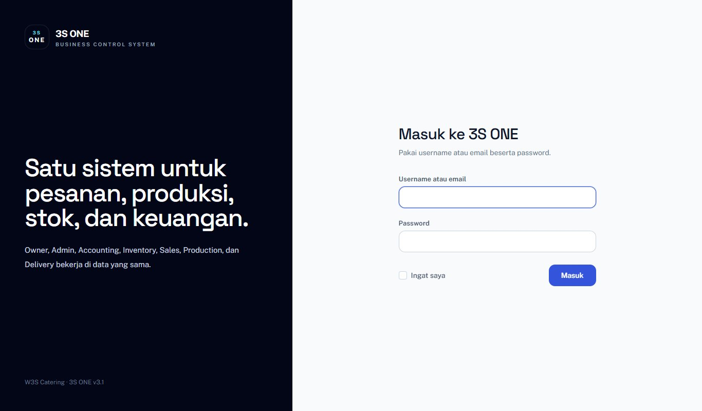
| Bagian | Fungsi |
|---|---|
| Bilah atas | Tab aplikasi: Owner, Admin, Accounting, Inventory, Sales, Production, Delivery. Hanya yang sesuai peran Anda yang tampil. |
| Menu kiri | Menu aplikasi yang sedang dibuka, dikelompokkan (Ringkasan, Master Data, Transaksi, Laporan, ...). |
| Lonceng (di Inventory) | Pemberitahuan untuk Anda: form yang menunggu persetujuan Anda, barang yang sudah bisa dibelanjakan, form yang ditolak, dan sebagainya. Tekan Buka form untuk langsung ke halamannya. |
| Inisial nama (pojok kanan) | Profil, ganti password, keluar. |
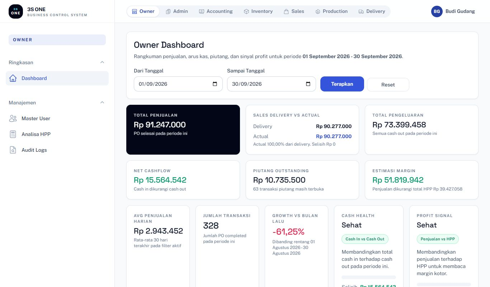
| Menu | Untuk apa |
|---|---|
| Master Menu, Master Customer | Daftar menu yang dijual (dengan harga) dan daftar pelanggan. |
| Purchase Orders | Mencatat pesanan pelanggan: menu, jumlah, tanggal & jam kirim, cara bayar. |
| SPK | Mengelompokkan pesanan ke slot jadwal masak. Begitu SPK disimpan, SPK Produksi di Inventory terbentuk otomatis dan dapur bisa menyusun kebutuhan bahannya. |
| Delivery | Memantau pengiriman per pesanan. |
| Menu Tanpa HPP/OHC | Daftar menu yang belum punya resep/harga pokok — perlu dilengkapi di Inventory › Resep & Menu. |
| Laporan PO / Produksi / Delivery / Best Seller | Rekap operasional per periode. |
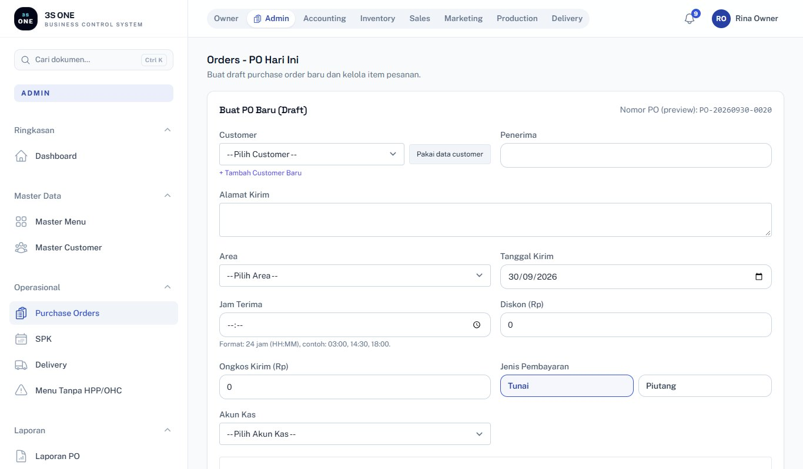
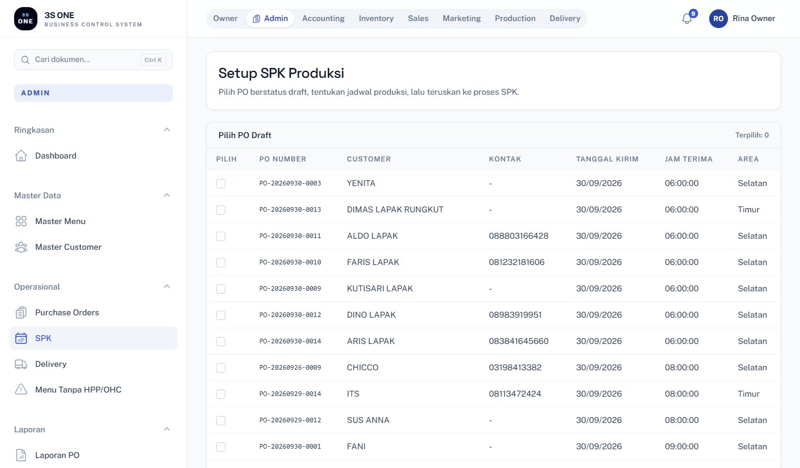
| Menu | Untuk apa |
|---|---|
| Dashboard | Penjualan hari ini dan bulan berjalan. |
| Laporan Sales Final & Retur | Penjualan yang benar-benar terjadi setelah retur/pengembalian. |
| Laporan Waste | Produk yang terbuang. |
| Laporan Penjualan | Rekap penjualan per periode (juga terbaca Accounting). |
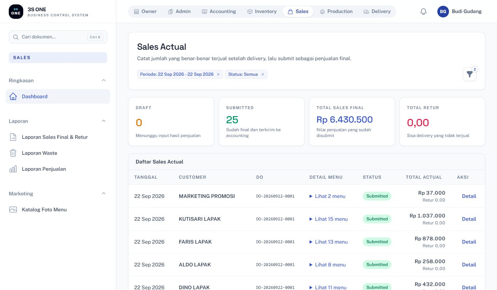
| Menu | Untuk apa |
|---|---|
| Dashboard Produksi | Jadwal masak hari ini per SPK. Dari sini ada tombol ke Form Kebutuhan di Inventory (Bab 9). |
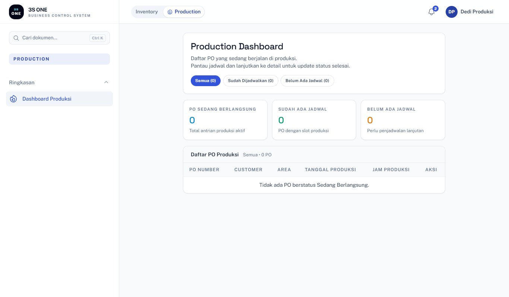
| Menu | Untuk apa |
|---|---|
| Dashboard Pengiriman | Daftar kiriman, status, dan bukti kirim (foto/penerima). |
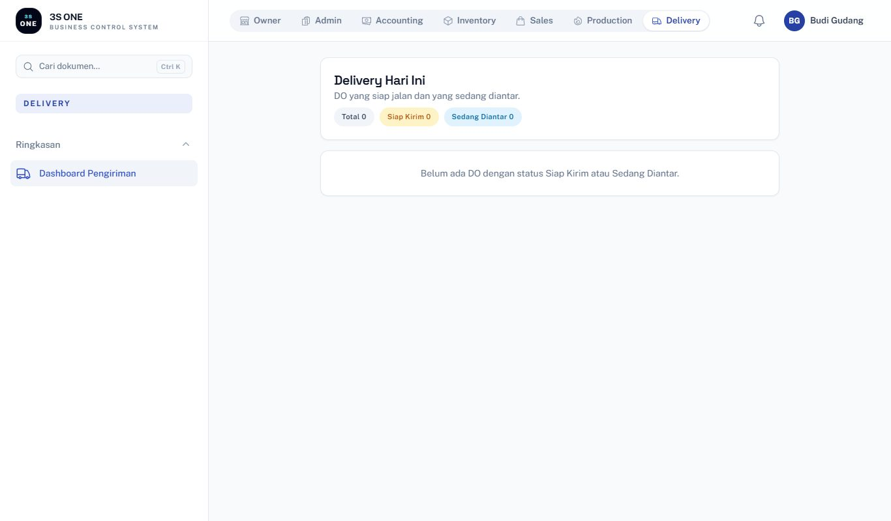
Urutan pakainya dari atas ke bawah: siapkan master & saldo awal sekali, catat transaksi setiap hari, pantau, tutup periode, lalu baca laporan.
| Kelompok / Menu | Untuk apa |
|---|---|
| Master Data Akun Kas, Kategori Pemasukan, Kategori Pengeluaran | Daftar rekening/kas dan jenis-jenis pemasukan & pengeluaran. Kategori bertipe Pembelian Stok dipakai otomatis saat gudang menerima bahan. |
| Setup Awal Saldo Awal, Adjustment Neraca, Adjustment Laba Rugi | Diisi sekali di awal (atau saat koreksi): saldo kas awal dan penyesuaian angka laporan. |
| Transaksi Pemasukan Lain, Closing Penjualan, Pengeluaran, Transfer Antar Akun | Catatan uang masuk/keluar harian. Pembelian bahan lewat Form Kebutuhan tidak perlu dicatat lagi di sini — sudah otomatis (Bab 10); Pengeluaran dipakai untuk belanja di luar form. |
| Monitoring Hutang, Piutang, Pembelian Stok | Siapa belum dibayar / belum membayar, dan rekap pembelian bahan. |
| Kontrol Periode Status Periode | Menutup buku bulanan. Setelah ditutup, transaksi bulan itu terkunci; perubahan hanya lewat penyesuaian yang tercatat. |
| Laporan Cashflow, Penjualan, Laba Rugi, Neraca, Pemakaian Bahan, Laporan Final | Laporan keuangan per periode; bisa diekspor Excel/PDF. |
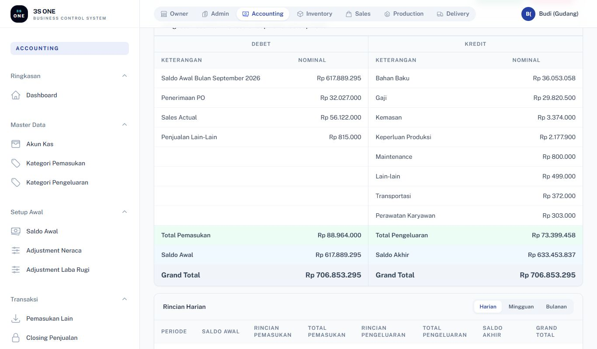
Inilah "dapur data" untuk bahan baku. Menu dibagi tiga kelompok.
| Menu | Untuk apa |
|---|---|
| Dashboard | Ringkasan: bahan di bawah stok minimum, antrean form yang menunggu Anda, SPK terdekat, perubahan harga terakhir. |
| Item Inventaris | Daftar bahan (nama, satuan, harga per satuan, stok minimum). Setiap perubahan harga tersimpan di Histori Harga. |
| Pembelian Bahan Baku | Rekap pembelian bahan beserta kondisi barang (Baik / Tidak Baik). Sebagian besar terisi otomatis dari Form Kebutuhan. |
| Stock Opname | Hasil hitung fisik stok per periode; menjadi dasar nilai persediaan. |
| Saldo Awal Stok | Nilai stok awal periode. |
| Pengaturan Inventory | Angka bawaan: % OHC dan profit resep, sumber angka HPP, pembulatan belanja, perlakuan barang ditolak, penomoran dokumen. Hanya Owner. |
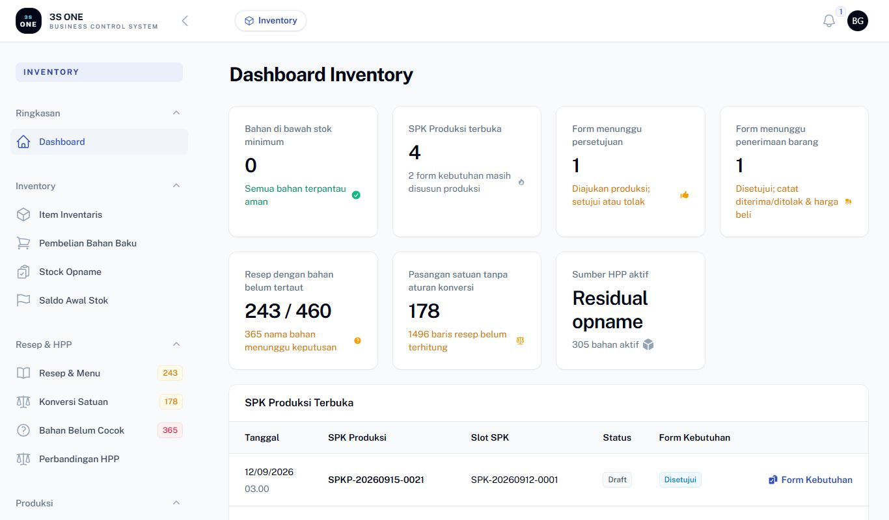
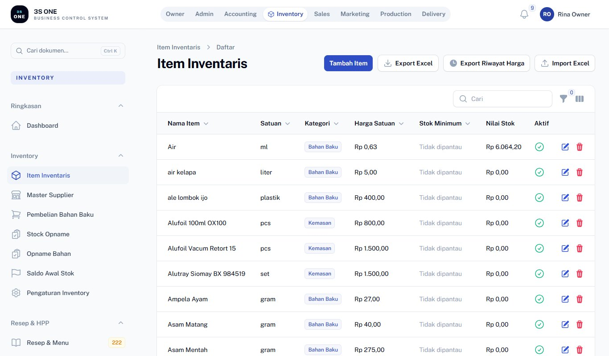
| Menu | Untuk apa |
|---|---|
| Resep & Menu | Resep tiap menu: bahan, takaran, hasil (porsi). Dari sini tombol Analisa HPP menghitung harga pokok, OHC, profit, dan harga jual. |
| Konversi Satuan | Aturan mengubah satuan resep ke satuan harga (mis. 1 kg = 16 butir). Tanpa aturan ini, biaya baris resep dihitung nol — halaman Konversi yang Belum Diatur menunjukkan mana yang kurang. |
| Bahan Belum Cocok | Nama bahan di resep yang belum terhubung ke daftar bahan. Tautkan, buat baru, atau abaikan. |
| Perbandingan HPP | Membandingkan HPP menurut resep × produksi dengan HPP menurut opname, per periode. Dasar Owner memutuskan sumber HPP mana yang dipakai laporan. |
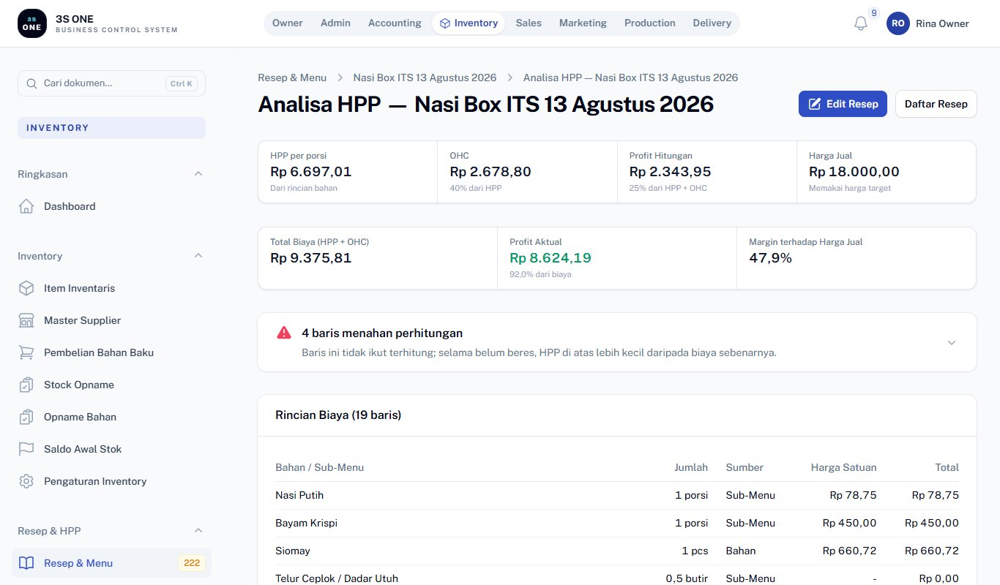
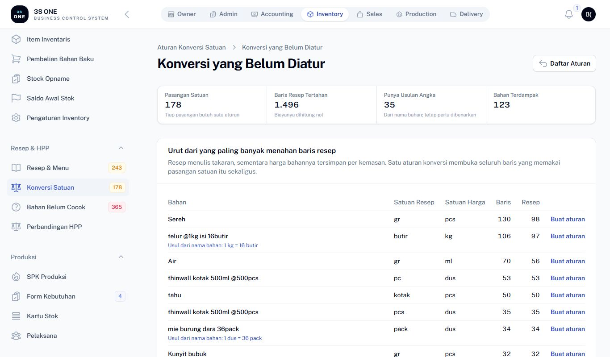
| Menu | Untuk apa |
|---|---|
| SPK Produksi | Jadwal masak dari SPK admin: menu & jumlah. Punya Form Kebutuhan, Lembar Kerja (pembagian tugas), Plating, dan cetak PDF. |
| Form Kebutuhan | Daftar semua form beserta statusnya. Alur lengkapnya di Bab 9. |
| Kartu Stok | Catatan keluar-masuk tiap bahan (saldo awal, pembelian, pemakaian, penyesuaian). Hanya dibaca — terisi otomatis dari form. |
| Pelaksana | Daftar orang dapur untuk lembar kerja. |
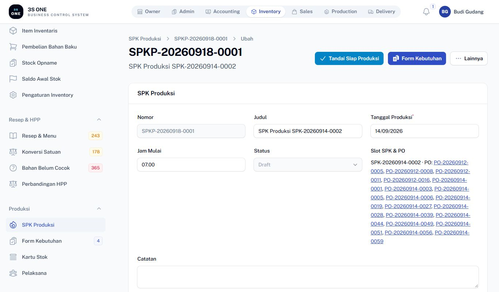
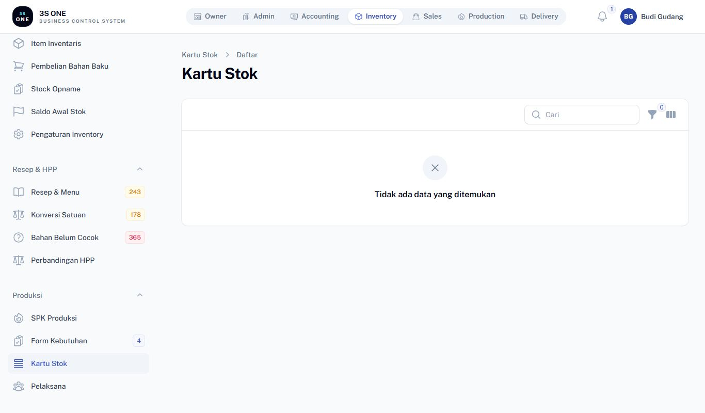
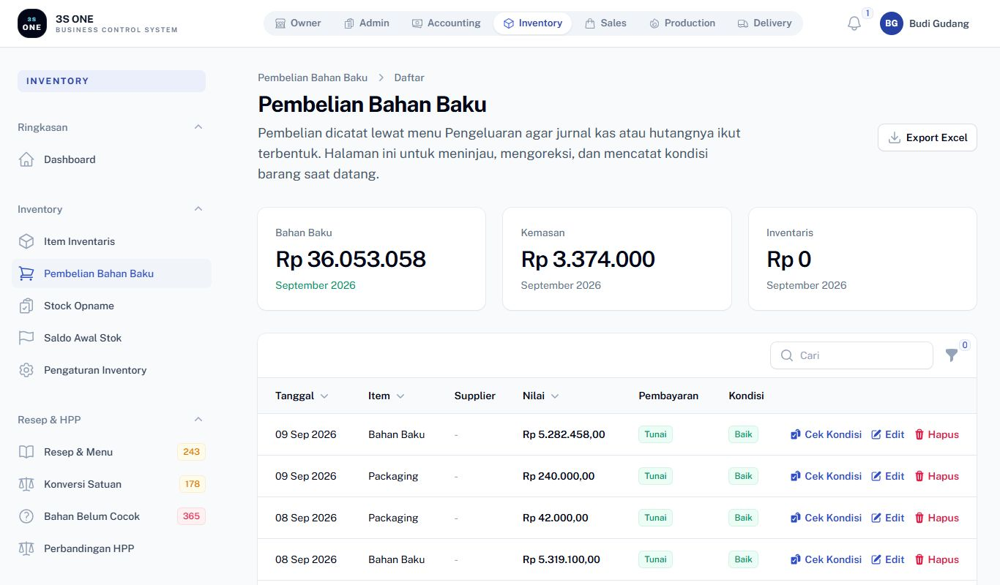
Form Kebutuhan menggantikan form kertas "Kebutuhan, Stok & Pembelian Barang". Satu form untuk satu SPK Produksi. Pekerjaannya berpindah meja — tiap meja hanya melihat tombol untuk bagiannya.
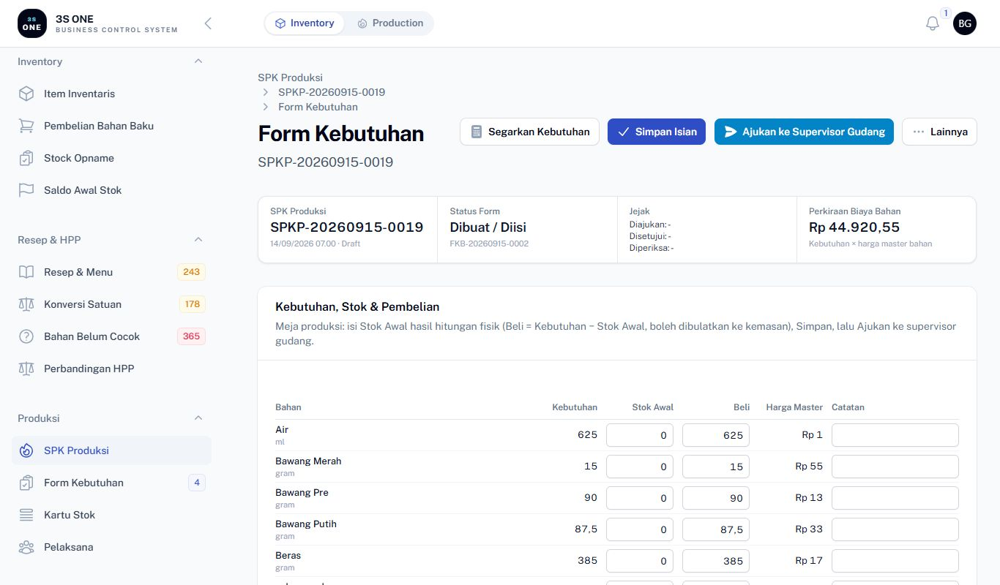
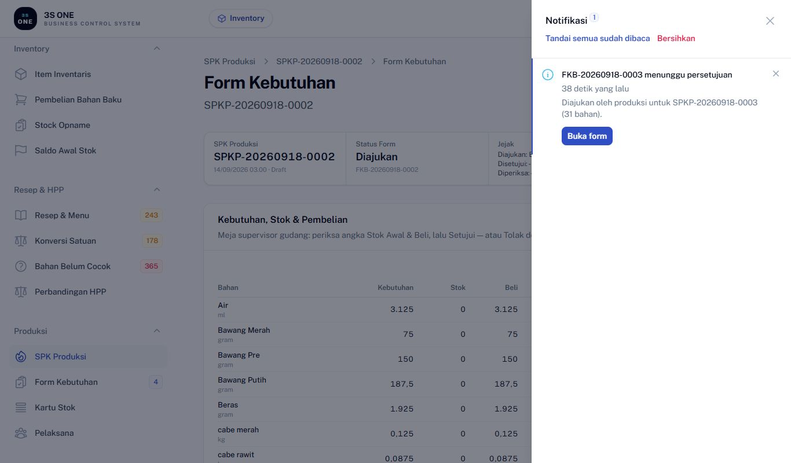
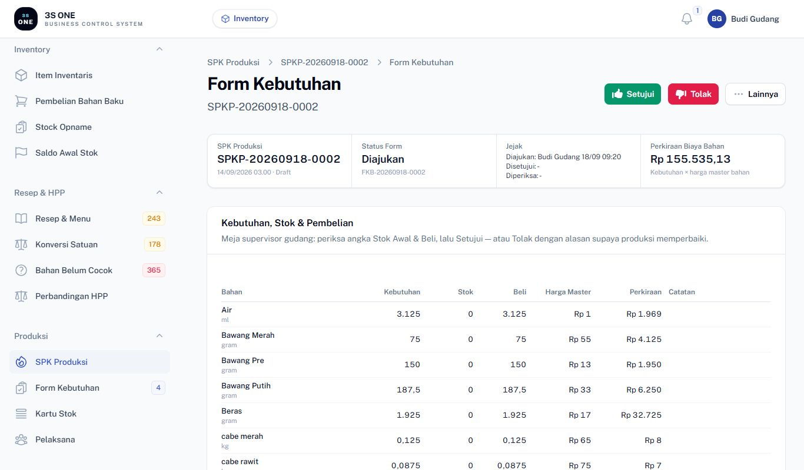
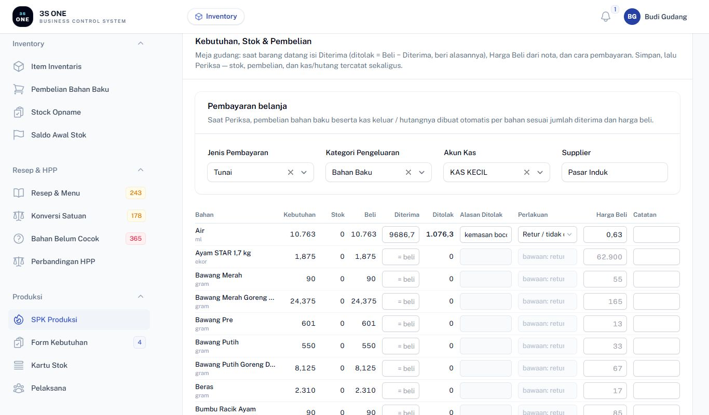
| Status | Artinya | Yang bisa bertindak |
|---|---|---|
| Dibuat / Diisi | Masih disusun dapur. | Produksi |
| Diajukan | Menunggu keputusan supervisor gudang. Terkunci. | Supervisor Gudang (Owner/Admin sebagai cadangan) |
| Disetujui | Gudang belanja / menunggu barang datang. | Staf Gudang / Supervisor / Accounting |
| Diperiksa | Barang sudah masuk stok. Menunggu dapur menutup SPK. | Produksi |
Di tahap Disetujui, staf gudang mengisi tabel bahan seperti ini untuk tiap baris:
| Kolom | Isi dengan |
|---|---|
| Diterima | Jumlah yang layak masuk gudang. Kosong = sama dengan Beli. |
| Ditolak | Terhitung sendiri = Beli − Diterima. Tidak bisa diketik, supaya tidak ada barang yang "hilang" di antara keduanya. |
| Alasan Ditolak | Wajib kalau ada yang ditolak (busuk, kemasan rusak, salah kirim, ...). |
| Perlakuan | Retur / tidak dibayar (bawaan) — barang dikembalikan, tidak ada biaya. Dibayar — tetap dibayar; nilainya masuk Kerugian Barang Rusak. |
| Harga Beli | Harga per satuan dari nota. Kosong = memakai harga master bahan. |
| Cara bayar (di atas tabel) | Tunai: pilih kategori & akun kas. Kredit: isi supplier & jatuh tempo. |
| PeriksaStaf gudang | → |
Kartu Stok+ Diterima × Harga Beli Pembelian Bahan Bakusatu catatan per bahan Kas keluar / Hutangsesuai cara bayar Kerugian Barang Rusakhanya bila ditolak-Dibayar Harga master bahanikut harga beli + histori |
Beli 20 kg ayam. Datang 18 kg bagus, 2 kg busuk dikembalikan ke supplier. Nota Rp 38.000/kg, tunai dari Kas Kecil.
Supaya angka di laporan bisa dipercaya, tiap angka punya satu sumber:
| Angka | Sumbernya |
|---|---|
| Harga bahan | Item Inventaris (harga per satuan). Berubah lewat: edit manual, import, atau harga beli di Form Kebutuhan. Semua perubahan tersimpan di Histori Harga. |
| HPP satu menu | Resep (bahan × takaran × harga bahan) + OHC % + profit % → harga jual hitungan. Lihat Analisa HPP. |
| Stok bahan | Kartu Stok: saldo awal + pembelian − pemakaian ± penyesuaian. Terisi dari Form Kebutuhan, bukan diketik. |
| Bahan Baku Terpakai (Laba Rugi) & Laporan Pemakaian Bahan | Dua cara hitung: Residual opname (Saldo Awal + Beli − Sisa) atau Resep × produksi (dari kartu stok). Mana yang dipakai diatur Owner di Pengaturan Inventory setelah Perbandingan HPP beberapa periode dianggap cocok. |
| Nilai persediaan (Neraca) | Stock Opname terakhir. |
Karena harga bahan berubah — biasanya setelah gudang mencatat harga beli baru di Form Kebutuhan. Buka Item Inventaris › Histori Harga untuk melihat kapan, dari berapa ke berapa, dan dari form mana. Kalau harga itu keliru, perbaiki harga bahannya; HPP menu ikut.
Bahan yang diberi stok minimum di Item Inventaris akan muncul di Dashboard Inventory (dan lonceng sekali sehari) begitu nilainya di bawah batas.
| Menu | Untuk apa |
|---|---|
| Dashboard | Ringkasan seluruh usaha: penjualan, kas, KPI. |
| Master User | Membuat akun, memberi peran, menonaktifkan, dan mereset password. Password sementara ditampilkan sekali — sampaikan langsung ke orangnya. |
| Analisa HPP | Profit hitungan vs profit nyata per periode: Penjualan − Bahan Baku − OHC, dengan target % per bulan. |
| Audit Logs | Jejak siapa mengubah apa dan kapan (akun, pesanan, transaksi). |
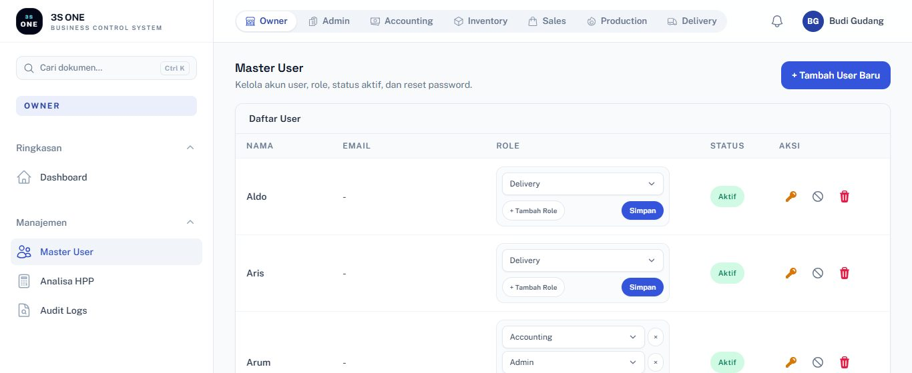
Owner, Admin, Accounting, Inventory (staf gudang), Supervisor Gudang, Sales, Production, Delivery. Untuk menunjuk siapa yang menyetujui Form Kebutuhan, beri peran Supervisor Gudang.
| Istilah | Artinya |
|---|---|
| PO (Purchase Order) | Pesanan pelanggan. |
| SPK | Surat Perintah Kerja: kumpulan pesanan untuk satu jadwal masak. |
| SPK Produksi | Versi SPK di Inventory: menu & jumlah yang harus dimasak, dengan form kebutuhan dan lembar kerja. |
| DO (Delivery Order) | Surat jalan pengiriman. |
| Form Kebutuhan | Daftar bahan yang dibutuhkan, stok yang ada, dan yang harus dibeli untuk satu SPK Produksi. |
| Kartu Stok | Catatan keluar-masuk tiap bahan. Sama seperti kartu stok di gudang, hanya otomatis. |
| Stock Opname | Hitung fisik stok pada tanggal tertentu. |
| HPP | Harga Pokok Produksi: biaya bahan untuk membuat satu porsi/menu. |
| OHC | Overhead Cost: biaya di luar bahan (gas, listrik, tenaga) yang ditambahkan sebagai persen dari HPP. |
| Resep / BOM | Daftar bahan dan takaran untuk satu menu. |
| Konversi satuan | Aturan mengubah satuan (butir ↔ kg, ml ↔ botol) supaya takaran resep bisa dihargai. |
| Retur | Barang dikembalikan ke supplier, tidak dibayar. |
| Residual opname | Pemakaian bahan dihitung dari selisih: Saldo Awal + Beli − Sisa. |
| Closing / Tutup buku | Mengunci transaksi satu periode agar laporannya tidak berubah lagi. |
| Peran | Jenis pengguna yang menentukan aplikasi & tombol yang tampil. |
Tombol Setujui hanya tampil untuk Supervisor Gudang (atau Owner/Admin) dan hanya setelah produksi menekan Ajukan. Kalau status masih "Dibuat / Diisi", giliran dapur dulu.
Baca alasannya di kotak merah di atas tabel, perbaiki isian, Simpan, lalu Ajukan lagi. Kotak merah hilang begitu diajukan ulang.
Diterima tidak boleh melebihi Beli. Catat kelebihannya sebagai pembelian terpisah lewat Accounting › Pengeluaran (kategori Pembelian Stok).
Periksa tidak bisa diulang. Minta Accounting mengoreksi catatan di Pembelian Bahan Baku (nilai dan kas ikut terkoreksi), dan perbaiki harga bahan di Item Inventaris bila harga master ikut salah.
Ada bahan yang belum tertaut (Bahan Belum Cocok) atau satuannya belum bisa dikonversi (Konversi Satuan › Belum Diatur). Lengkapi, dan HPP langsung terhitung.
Minta Owner mereset lewat Master User. Anda akan mendapat password sementara dan diminta menggantinya saat masuk.
Seharusnya tidak, karena sumbernya sama. Cek dulu apakah periode/tanggal yang dipilih sama, dan apakah periode itu sudah ditutup buku. Kalau masih berbeda, laporkan dengan menyebut menu, periode, dan versi sistem (tertera di halaman masuk).
3S ONE · Panduan Pengguna v3.0 · Dibuat dari sistem yang berjalan, bukan dari rencana — bila layar Anda berbeda dari panduan ini, kemungkinan versi sistem sudah lebih baru.